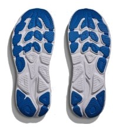
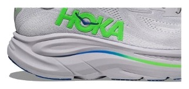

DAILY｜クッション系ジョグ
厚いのに、そこまで重くない。
衝撃吸収147SAは6足でトップタイ。それを実測275gに収めている。同じクッションのボメロ 18より23g軽い。ただし価格は¥20,900で、コスパ点は3.0にとどまった。何に払う靴なのかを見ていく。
厚いクッションを軽く履きたい人。ゆっくりしたジョグが中心の人。ドロップの低い靴が好きな人。
価格を重視する人。ペースを上げる練習にも使いたい人。


衝撃吸収147SAで275g。ボメロ 18は同じ147SAで298g。この差がクリフトンの価値である。
前足部のエネルギーリターンは57.2%で、スピードの点は2.5。走りを押し出す靴ではない。
摩耗深度は1.0mmで推定寿命は約600km。1kmあたり約35円は今回の6足で最も高い。コスパ点が伸びない原因である。
5点満点。計測値を当サイトのルールで点数にしたもの。
クッションは4.0で、耐久性も4.0ある。軽さとスピードは2.5で、グリップと安定性は3.5。性能点3.68はデイリー67足中26位で、ボメロ 18（3.64）とほぼ同じである。性能の差は小さく、違いは重さと価格に出ている。
軽いほど短い。
摩耗深度から推定した寿命で計算。短いほど安い。
| クリフトン 10 | ボメロ 18 | 1080 v14 | |
|---|---|---|---|
| 価格 | ¥20,900 | ¥16,500 | ¥19,800 |
| 実測重量 | 275g | 298g | 285g |
| 衝撃吸収（SA） | 147 | 147 | 142 |
| エネルギーリターン前足部 | 57.2% | 58.9% | 59.4% |
| 摩擦係数 | 0.49 | 0.38 | 0.52 |
| 摩耗深度 | 1.0mm | 1.1mm | 0.6mm |
| 性能点 | 3.68 | 3.64 | 3.84 |
| コスパ点 | 3 | 3.5 | 4 |
ボメロ 18より軽く、高い。1080 v14はクッションがわずかに低いが、耐久性とコスパで上回る。軽さに¥1,100以上を払うかが分かれ目になる。
ドロップは5mmと低めである。摩擦係数は0.49で、中程度のグリップがある。ヒール剛性は3、かかと幅は94.5mm（計測値）で、安定性の点は3.5。極端に不安定ではないが、安定性重視の靴でもない。
ドロップが5mmと低いので、高めのドロップの靴から替える人は、ふくらはぎの感覚を確かめながら距離を伸ばしたい。摩耗は計測で1.0mm。距離を記録しておくと替えどきを判断しやすい。
クッションの厚さを保ったまま、1回の負担を軽くしたい人に向く。週15kmなら約9か月で買い替えの目安が来る。距離の少ない人ほど、1kmあたりの高さは気になりにくい。
クッションと軽さの組み合わせは魅力だが、数字で見るコスパは強くない。足に合って、軽さを取りたい人が買う靴である。
※本記事は海外ラボ（RunRepeat）の計測データとメーカー公表値、当サイトの計算をもとにした分析です。計測はUS9（約27cm）です。1kmあたりの費用は摩耗深度から推定した寿命での概算です。価格は当サイトの掲載値で、変更されている場合があります。